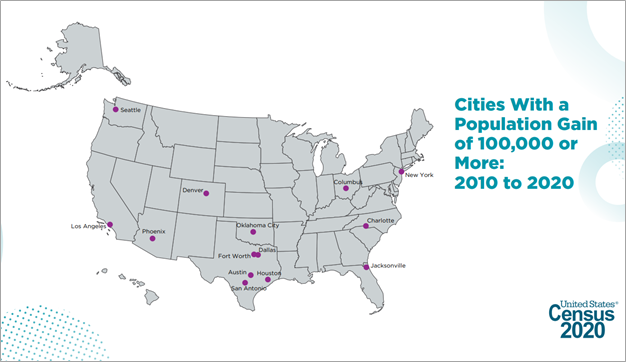
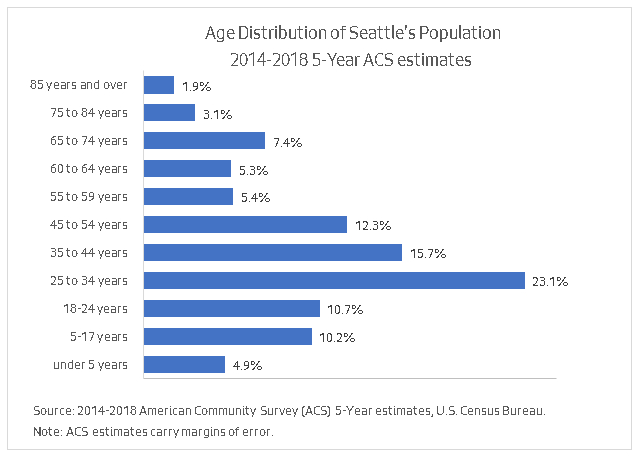
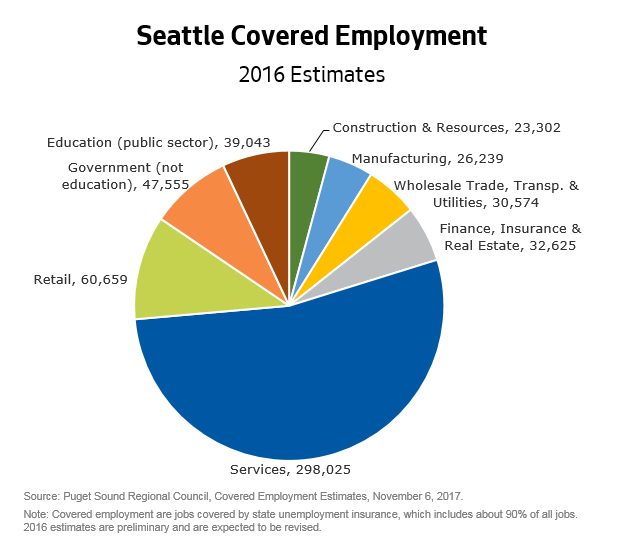
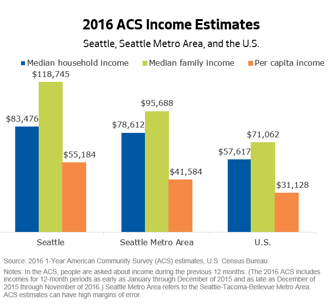
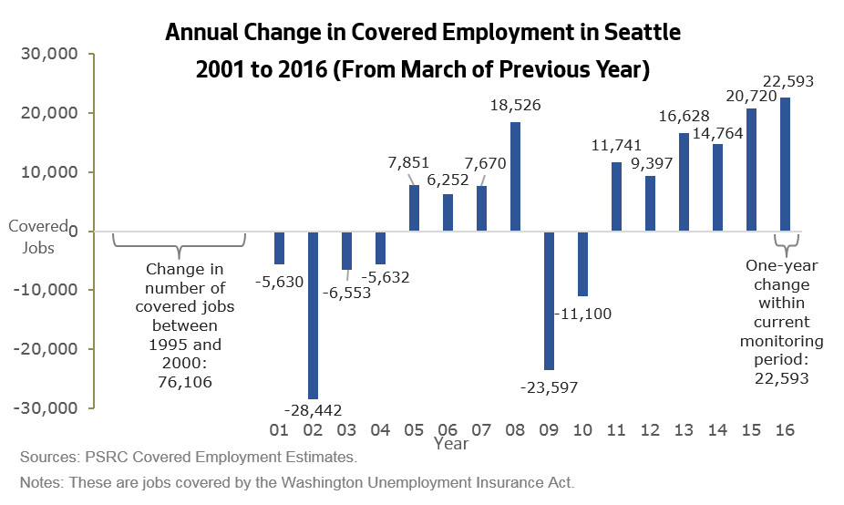
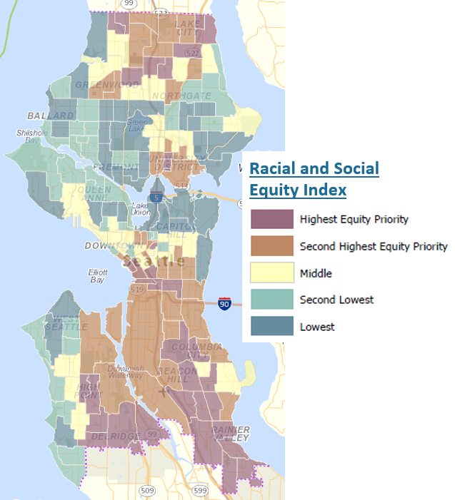

Census 2020 Data
On August 12, 2021 the U.S. Census Bureau released the 2020 Census Redistricting Data for states and local communities. This data will include the following statistics at a variety of geographic levels:
- Population totals
- Population by race & Hispanic/Latino origin and by broad age group (under 18, 18+)
- Housing unit counts and occupancy status
Resources include this short video and the News Conference about the Release of 2020 Census Redistricting Data. To find the Redistricting Data and information about future releases of more detailed 2020 Census datasets, visit the Bureau's 2020 Census Results webpage.
The Census Bureau will be providing tools for the public to access some of the Redistricting Data on the release date of August 12. However, the full Redistricting Data file will be released in a legacy technical format that requires analysists to do additional work to extract the data.
We will prepare information and materials to help people access and understand the 2020 Census data and changes since 2010 for Seattle as a whole; and for the city's urban centers and villages, community reporting areas, and council districts. We will provide these materials as they become available.
Some highlights are below. For more details, visit our Census 2020 page.
Population & Households Quick Statistics
2020 Census estimates for Seattle from the U.S. Census Bureau - Redistricting Data (August 12, 2021):
- Population count: 737,015
- Population under 18 years of age: 106,841
- Population age 18 and over: 630,174
- Population of color: 298,847
- Population in households: 707,097
- Number of households: 345,627
- Average household size: 2.05
- Population in group quarters: 29,918
2010 Census estimates for Seattle from the U.S. Census Bureau:
- 2010 population count: 608,660
- Population under 18 years of age: 93,513
- Population age 18 and over: 515,147
- Population of color: 205,082
- Population in households: 583,735
- Number of households: 283,510
- Average household size: 2.06
- Average family size: 2.87
- Population in group quarters: 24,925
2014-2018 5-year American Community Survey (ACS) estimates on demographic characteristics in Seattle
- Population: 708,823 (+/- 63)
- Population in households: 686,262 (+/- 1,122)
- Number of households: 323,446 (+/- 1,814)
- Average household size: 2.12 (+/- 0.01)
- Average family size: 2.85 (+/- 0.02)
- Population in group quarters: 22,561 (+/- 1,117)
The most up to date American Community Survey 1-year estimates and 5-year estimates about Seattle's residents and households are available on the Census Bureau's new data portal, data.census.gov. Keep in mind that ACS estimates carry margins of error and are intended to provide an overview of characteristics, not precise counts.
Highlights
- With a population of 737,015 in 2020, Seattle is the 18th most populous city in the U.S. and has the largest population of cities in King County, the broader Seattle-Tacoma-Bellevue Metro Area (itself the 14th largest metro area in the nation), and the state of Washington.
- Seattle's population grew rapidly between 2010 and 2020:
- Seattle's 21.1% growth in population between 2010 and 2020 was more than twice the rates of growth the city saw over each of the two preceding decades.
- Seattle's population growth between 2010 and 2020 was also faster than the 17.5% growth in King County as a whole, 16.8% growth in our broader metro area, 14.6% growth in Washington state, and 7.4% growth in the U.S.
- Seattle was one of 14 cities in the U.S. that grew by more than 100,000 people in the last decade, as highlighted by the Census Bureau in releasing the 2020 Census Redistricting data:

-
Household size: Decennial census data show that Seattle has experienced a downward trend in average household size for decades. While American Community Survey (ACS) estimates suggest that this trend reversed during the middle of the past decade, the 2020 Census shows that Seattle's average household size has resumed a downward trajectory. Between the 2010 and 2020 censuses, the average number of people per household in Seattle decreased slightly from 2.06 to 2.05.
-
Age distribution: The 2020 Census data available thus far include only two broad age categories: children (under 18 years of age) and adults (age 18 and above). Between 2010 and 2020, Seattle's adult population increased more quickly than our child population, continuing a trend seen in previous recent decades. The 2020 Census count for Seattle included 106,841 residents under 18 (about 14.5% of our total population) and 630,174 residents aged 18 and over.
- The following chart is based on estimates from the 2014-2018 5-year ACS estimates because we do not yet have estimates for detailed age groups from the 2020 Census. As of the 2014-2018 time period, three-quarters of Seattle residents were adults between 18 and 64 years of age, with an especially high and growing concentration of young adults ages 25 to 34. Comparing those ACS estimates to 2010 data indicates that the 65 to 74 age category had the highest growth rate, reflecting aging of the baby boom population.

Featured Products
Mapping apps for accessing neighborhood-level data
Census 2010 Reports for Seattle
Key Data Sources
U.S. Census Bureau Data
Two major Census Bureau programs that provide data on housing at a community and neighborhood level are:
-
The decennial census is done every 10 years to provide counts and basic information about population, households, and housing units. Housing characteristics covered in the census include occupancy and vacancy rates and tenure (owner or renter) for occupied units.
-
The American Community Survey (ACS) is a continuous survey that produces estimates on a broad set of population, social, economic, and housing characteristics. Housing topics on the ACS extend beyond those on the decennial census and include type of structure (single-family or multifamily), home value, monthly housing costs, and more.
The ACS has replaced the long form that used to be part of the decennial Census. Because the ACS is a sample survey, ACS estimates carry margins of error.
The Census Bureau's Population Estimates Program (PEP) provides estimates for the U.S., states, metropolitan statistical areas, counties, and cities. PEP estimates for Seattle are best used for comparisons with geographies outside Washington state.
The Washington State Office of Financial Management (OFM):
The Puget Sound Regional Council
- PSRC provides estimates, forecasts, and analysis at a range of geographic scales as part of the work to support planning in the central Puget Sound region. Check out their Puget Sound Trends bulletins.
Where to Go From Here
Housing Quick Statistics
2019 Estimates for Seattle from the WA State Office of Financial Management (OFM) (April 1, 2019 estimates)
- Total housing units: 367,806
- Occupied housing units: 351,503
- Household population: 718,136
- Group quarters population: 29,114
2014-2018 5-year American Community Survey (ACS) estimates on housing characteristics in Seattle
- Total housing units: 344,503 (+/- 1,632)
- Occupied housing units: 323,446 (+/- 1,814)
- Owner-occupied housing units: 149,017 (+/- 2,207) (or 46.1 percent)
- Renter-occupied housing units: 174,429 (+/- 2,393) (or 53.9 percent)
- Ave. household size in owner-occupied units: 2.40 persons (+/- 0.02)
- Ave. household size in renter-occupied units: 1.89 persons (+/- 0.02)
More detail on housing characteristics from the ACS 1-year estimates and 5-year estimates are available on the Census Bureau's new data portal, data.census.gov. Keep in mind that ACS estimates carry margins of error and are intended to provide estimates related to characteristics rather than official counts.
2010 Census Estimates:
- Total housing units: 308,516
- Occupied housing units: 283,510
- Owner-occupied housing units: 136,362 (48.1 percent)
- Renter-occupied housing units: 147,148 (51.9 percent)
- Average household size: 2.06 persons
- Ave. household size in owner-occupied units: 2.31 persons
- Ave. household size in renter-occupied units: 1.83 persons
Highlights
Housing growth trends: As of 2019, there were 367,806 housing units in Seattle, representing a 19 percent increase since 2010 (according to OFM). The growth in the number of housing units in Seattle from 2010 to 2019 surpassed the 14 percent growth seen between 2000 and 2010. However, even with the rapid increase this decade, expansion of our housing stock has not kept up with Seattle's population growth of 22 percent between 2010 and 2019.
As King County's largest and densest city, Seattle typically adds housing at a slower pace than the county as a whole. However, the city has added housing at an accelerating pace each decade since 1960 and outpaced countywide growth (which was about 12%) between 2010 and 2019.
-
Occupied housing units: The ACS estimates for the 2014-2018 five-year period show 93.8 percent of an estimated 323,446 total housing units in Seattle as occupied.
-
Tenure (owner- and renter-occupancy): The 2010 census showed a bit more than half of Seattle's occupied housing units (51.9%) were renter-occupied. In comparison, the five-year ACS estimates for 2014-2018 show 53.9 percent of occupied units as rentals. The increase in the prevalence of renting since 2010 extends the path of declining homeownership rates that Seattle has been following each decade since 1960. (This trend was briefly interrupted when homeownership rates in Seattle increased in the 2000s before the Great Recession wiped away those gains.)
Household sizes tend to be larger in owner-occupied housing than in renter-occupied housing. In 2010 there were 2.31 persons per household in Seattle's owner-occupied units compared to 1.83 persons per household in renter-occupied units. Departing from trends in past decades, average household sizes in Seattle increased between the 2010 census and the five years represented in the 2014-2018 ACS. This happened in both owner-occupied and renter-occupied housing. (Average household size went from 2.31 persons to 2.40 persons among owner households and went from 1.83 to 1.89 among renter households). As of the 2014-2018 ACS, owner-occupied units still house more than half of Seattle's overall household population even though these owner-occupied housing units are outnumbered by renter-occupied units.
Housing costs
- An analysis that weconducted using a special tabulation of 5-year ACS data for 2011-2015 showed that over two-thirds of low-income households in Seattle were cost-burdened, i.e., paying more than 30 percent of their income for housing. Cost burdens are disproportionately shouldered by people of color. The same data showed that more than a quarter of Black households were paying over half of their income for housing.
- Housing costs have increased. The most recent data we have from the ACS, single-year data shows that the median cost for rent and basic utilities was roughly 35 percent higher in 2018 than it was in the 2011-2015 five-year period-and this is after adjusting for inflation. The run-up in rents has placed more housing outside the reach of low- and moderate-income renters.
- None of these data reflect the extreme difficulty with paying for housing that many people are having now after being laid off during the new coronavirus pandemic.
Seattle's Comprehensive Plan Growth Strategy
-
Seattle's current Comprehensive Plan anticipates at least 70,000 housing units citywide over the 20-year planning period from 2015 to 2035. These estimates are based on the city's share of the growth that OFM had previously projected for King County. Seattle's Growth Strategy guides most of the city's growth to urban centers and urban villages.
- As shown in the Urban Center / Village Residential Growth Report, Seattle added 34,117 housing units from the beginning of 2016 to the end of 2019. This represents roughly 49 percent of the 70,000 housing units that the current Comprehensive Plan anticipated for the 20-year planning period ending in 2035. In addition, more than 20,000 units were in the pipeline (permitted to be built but not yet finished) as of the end of 2019.
- Our Urban Village Indicators Monitoring Report analyzes additional indicators related to housing growth and affordability and other key aspects of livability to gauge progress in implementing the Comprehensive Plan. We will be analyzing these indicators again to inform the next Comprehensive Plan update. In the meantime, see our Monitoring Dashboard for regular updates on indicators related to housing growth and employment growth.
- New growth projections will be incorporated in the next major update of the Comprehensive Plan, which is due in 2024.
- In partnership with King County, the City is updating the existing Buildable Lands Report to support the upcoming update to the Comprehensive Plan. The report will update the City's development capacity estimates, ensuring that we have room for projected growth in housing and jobs.
Featured Products
New Housing Units in Seattle - Our Residential Permit Reports mapping app and data portal provides access to handy reports that we update periodically based on our building permit data. The reports available include:
- The Citywide Residential Permits Report - this shows the number of permits in recent years-by housing type-for new units and for demolished units. Completed permits are reported by year the permit was finaled. The report also shows the number of building permits that have been issued.
- The Urban Center / Village Residential Growth Report - this shows the net number of housing units added in the city and in individual urban centers and villages during the current Comprehensive Plan planning period.
Mapping apps for accessing neighborhood-level data
Census 2010 Reports for Seattle
Key Data Sources
U.S. Census Bureau Data - Two major Census Bureau programs that provide data on housing at a community and neighborhood level are:
-
The decennial census - done every 10 years to provide counts and basic information about population, households, and housing units. Housing characteristics covered in the census include occupancy and vacancy rates and tenure (owner or renter) for occupied units.
-
The American Community Survey (ACS) - a continuous survey that produces estimates on a broad set of population, social, economic, and housing characteristics. Housing topics on the ACS extend beyond those on the decennial census and include type of structure (single-family or multifamily), home value, monthly housing costs, and more. Because the ACS is a sample survey, ACS estimates carry margins of error.
The Census Bureau's Population Estimates Program (PEP) - provides estimates for the U.S., states, metropolitan statistical areas, counties, and cities. PEP estimates for Seattle are best used for comparisons with geographies outside Washington state.
The Washington State Office of Financial Management (OFM) - The Office of Financial Management's Forecasting Division compiles housing data as part of its financial and growth management functions.
The Puget Sound Regional Council - PSRC provides forecasts and a wealth of data at a range of geographic scales as part of its work to support planning in the region. These data resources include:
- A regional forecast that includes households, persons, jobs, and other variables through the year 2050
- A set of Land Use Vision (LUV) projections indicating how cities and other areas in the region could grow based on assumptions developed with help from local planners
Where to Go from Here
Prosperity Quick Statistics
About People Living in Seattle
2016 American Community Survey (ACS) estimates:
- Share of population (25 years and older) with a bachelor's degree or higher: 63%
- Most common type of occupation (for civilian employed residents 16 years and older): 60% work in management, business, science, and arts
- Household median income: $83,476
- Family median income: $118,745
- Per capita income: $55,184
- Poverty rate: 11.5%
About Jobs in Seattle
2016 Covered Employment Estimates from the Puget Sound Regional Council:
- Number of jobs located in Seattle: 567,000, not including construction/resource jobs
Job Growth Planned for in Seattle's Comprehensive Plan:
- Anticipated growth in jobs during the 20-year planning period of 2016 to 2035: 115,000
Highlights

-
Educational attainment: Seattleites as a group are highly educated. Estimates for 2016 from the American Community Survey (ACS) indicate that 63 percent of Seattle residents 25 years and older have a bachelor's degree or higher and 27 percent have a graduate or professional degree.
In the Seattle metro area, 42 percent of people in this age group have at least a bachelor's degree. In the U.S. as a whole, 31 percent have a bachelor's degree or higher, which is less than half the share in Seattle.
-
Labor force and occupations: Seattle has a high concentration of people in prime working-age groups and a high labor force participation rate. A large share of Seattle's residents work in management, business, science, and arts occupations. In 2016, 60 percent of Seattle's civilian employed population 16 and older worked in this general category of occupations. This compares to 46 percent in the broader metro area and 38 percent in the nation as a whole.

- Median incomes: The 2016 American Community Survey (ACS) estimated the Seattle median household income to be about $83,500. This is well above the national median household income, and slightly higher than the median household income for the Seattle metro area. The 2016 ACS estimate for Seattle's median family income is $119,000, a figure markedly higher than median family income in the broader Seattle metro area.
- Poverty: The 2016 ACS estimated that 11.5 percent of Seattle residents had incomes below the poverty threshold. This compares to 9.6 percent in the broader metro area, and 14.0 percent in the U.S. as a whole. Poverty rates captured in the 2016 ACS are somewhat lower than those from the 2011 ACS, reflecting the ongoing recovery from the Great Recession and recent economic growth in the region. (The poverty threshold in 2016 for a family of three with one child under 18 was roughly $19,000.)
- Jobs in Seattle: The City historically used covered employment to track employment. Puget Sound Regional Council (PSRC) estimates that that there were 558,023 covered jobs in Seattle workplaces as of March of 2016. Covered jobs are those covered by the Washington state Unemployment Insurance Act and typically comprise about 85 to 90 percent of the total employment in an area.
The chart below shows annual changes in covered employment, including declines due to the two recessions that began in 2001 (when the dot-com bubble burst) and in 2008 (when the Great Recession began) as well as increases during periods of recovery.
Between 2015 and 2016, the city gained about 22,600 covered jobs. This was sixth straight year that Seattle experienced job growth within the current economic expansion and the largest one-year increase in Seattle recorded since PSRC began tracking covered employment.

-
Job Growth Planned for in Seattle's Comprehensive Plan: In the Puget Sound Region, jurisdictions adopt growth targets for jobs as well as housing. The City of Seattle is anticipating an additional 115,000 jobs between the beginning of 2016 and the end of 2035.
Featured Products and Resources
Decennial Census and ACS Estimates for Seattle
Jobs and Employment Report
Key Data Sources
U.S. Census Bureau Data
Census Bureau programs that provide data on housing at a community and neighborhood level include:
The Census Bureau operates two major programs that provide data on people and households based on place of residence down to the city level and neighborhood levels:
-
The decennial census is done every 10 years to count the population and gather basic information about population demographics, households, and housing units. Census topics include age, sex, race, Hispanic ethnicity, household composition, owner / renter status, and group quarters populations.
-
The American Community Survey is a continuous survey that produces estimates on a broad set of population, social, economic, and housing characteristics. Examples of survey topics include education, labor force participation, incomes, earnings, commutes to work, and the occupations and industries in which residents are employed. The survey also asks about housing values and rents. The American Community Survey has replaced the long form that used to be part of the decennial census.
Puget Sound Regional Council (PSRC)
PSRC provides a variety of economic data, including estimates of employment, and produces forecasts at a wide range of geographic scales as part of their work to support planning in the region.
Where to Go From Here
Quick Statistics
2020 Decennial Census (U.S. Census Bureau)
- Persons of color: 40.5%
- Race/ethnicity:
- American Indian & Alaska Native - 0.4%
- Asian - 16.9%
- Black or African American - 6.8%
- Native Hawaiian & Other Pacific Islander - 0.3%
- White – 59.5%
- Another race - 0.6%
- Two or more races - 7.3%
- Hispanic or Latino ethnicity (of any race): 8.2%
2021 American Community Survey (ACS) 5-Year Estimates (U.S. Census Bureau)
- Foreign born: 19.3% (+/- 0.4 percentage pts.)
- Population (age 5+) speaking language other than English at home: 22.1% (+/- 0.5 percentage pts.)
Highlights
-
Based on 2020 Census estimates, four out of every 10 Seattle residents are people of color.
-
Largest racial/ethnic groups of color in Seattle: Asians comprise the largest group of color (16.9% of the city's population). The next two most populous groups of color are persons who are of Hispanic/Latino ethnicity (8.2%) and persons of Black or African American race (6.8%). About seven percent of Seattle residents indicated two or more races.
-
Fastest growing groups in Seattle: Since 2010, multiracial people, Asians, and people of Hispanic/Latino ethnicity have been the fastest growing groups.

Click on image to enlarge
While people of color have been increasing as a share of the population, the increase in Seattle has been slower than in the rest of King County.
-
Continued deep disparities in the social and economic well-being of Seattle residents: Disparities by race and ethnicity due to inequitable conditions and a legacy of institutionalized racism are evident in every major indicator of well-being measured in the ACS: education, income, unemployment rates, homeownership, housing costs burdens, vehicle availability, and others.
Our Community Indicators report documents some of these disparities. In general, the data show that White, non-Hispanic people are the most advantaged while Blacks, Native Americans, and Pacific Islanders tend to be the most disadvantaged. Indicators of well-being are also commonly worse for Hispanics and Latinos that for the White, non-Hispanic population. Asians and multi-race persons are also doing more poorly than non-Hispanic Whites on some of these indicators. Among Asians in Seattle, those who are Cambodian, Hmong, Thai, or Vietnamese tend to have lower household income levels and education levels than residents who are Asian Indian, Chinese, or Taiwanese.
Seattle's Race and Social Justice Initiative (RSJI) is working to reduce these kinds of socioeconomic disparities.
Featured Products
The Racial and Social Equity (RSE) Index combines three sub-indices related to race & ethnicity, socioeconomic disadvantage, and health disadvantage to identify where RSJI priority populations and disadvantaged populations make up relatively large proportions of residents.
The City demographer designed the RSE index with interdepartmental consultation to help prioritize neighborhoods for programs, planning, and investments.
Access the 2023 update of the RSE Index in this interactive mapping app or printable map.
The index is also available on ArcGIS Online, Seattle GeoData, and the City’s internal GIS server.

See our RSE Index Users’ Guide for tips on using the index, details on its construction, and examples of how departments are applying the index. The 2019 version of the RSE index remains available on ArcGIS Online and the City’s internal GIS production Server.
The Equitable Development Monitoring Program provides an ongoing source of data and analysis to inform work to reduce race-based disparities, advance equity, and combat displacement. This Includes:
-
Community Indicators to gauge progress on broad aspects of equitable development including home ownership and housing affordability, neighborhood livability, transportation, and education and economic opportunity. Includes analysis of disparities by race and ethnicity and by neighborhood.
-
Heightened Displacement Risk Indicators to increase our understanding of displacement and detect increases in near-term displacement risks.
-
Information on Neighborhood Change so that indicators can be viewed alongside historical context and recent shifts in racial and ethnic demographics.
Basic population and demographics are available in Seattle GeoData and the following PDF reports for:
The 2010 and 2020 Census Map Viewer includes colorful, detailed dot density maps and thematic maps of race and ethnicity by census block in Seattle and surrounding neighborhoods in King County.
The I Love Census Data conversation series was coordinated in 2021 by the Seattle Department of Neighborhoods, OPCD City Demographer, and the Seattle Office for Civil Rights. Sessions included the following:
Race and Ethnicity Through Time (1950-2020): This animated map shows Race Through Time based on decennial census data. Race and ethnicity categories reported in the census have changed as shown in the Measurement of Race and Ethnicity Across the Decades (1790–2020).
Maps with neighborhood-level data on languages and more
-
Exploring the Patterns of People provides access to census tract-level ACS estimates on race/ethnicity, language spoken, region of birth, and other topics.
- This mapping app on languages spoken provides tract-level estimates from the ACS for the shares of population (age five and older) who speak languages other than English at home. ACS estimates can have large margins of error. Concentrations on these maps are best viewed as general locations of language communities. Click on a tract to get more detail on languages spoken there. The 2013 five-year estimates in the app provide the widest variety of languages. The Census Bureau has reduced the languages it reports at the tract level.
Key Data Sources
U.S. Census Bureau Data: Two Census Bureau programs—the American Community Survey and the decennial census—provide the most commonly used demographic data available at a community and neighborhood level. The Bureau provides guidance on how to access race data.
- The decennial Census is conducted by the U.S. Census Bureau every 10 years to provide a full count of the U.S. population and gather basic information on population, households, and housing characteristics. The population data collected includes age, sex, race, and Hispanic or Latino origin.
- As of early 2023, the only 2020 decennial Census statistics available for local communities are those in the Redistricting Dataset (The dataset is so named because it is used for state and local legislative redistricting). This dataset includes tabulations for general race categories and Hispanic/Latino origin and crosstabulations by broad age groups (under 18, 18+). With the 2020 Census data, the Bureau released these related materials:
We created an in-depth guide to help data users to access statistics for detailed race/ethnic groups from the Census Bureau and other sources. We are hoping to update this guide soon.
COVID-19 Race & Ethnicity Dashboard: COVID-19 is having disproportionately large impacts on communities of color. This dashboard from Public Health - Seattle & King County provides weekly updates of case statistics by race and ethnicity as well as by neighborhood.
Where to Go From Here
Land Use Quick Statistics
How Seattle's Land Is Used
- Seattle's area: 53,113 acres (83 square miles)
- People per acre in 2012: 11.6
- Acres of rights-of-way: 14,170
- Acres of parks and open space owned by the City of Seattle: 5,003
- Acres of open space per 1,000 residents in 2012: 8.9
- Percent of the population that lives with ¼ mile of a city-owned open space: 85%
- Percent of the city in single-family zoning (excluding parks and rights-of-way): 54%
How Seattle's Transit Measures Up
- Nearly all of Seattle’s population, 97.5%, lives within ¼ mile of a transit stop with some level of service
- Ranks 7th of the 25 largest U.S. cities in transit service with a Transit Score of 59 (Walk Score)
- Ranks 6th of the 50 largest U.S. cities for walkability with a Walk Score of 74 (Walk Score)
Highlights


-
Residential construction permits: Seattle is experiencing high volumes of residential permits with historic highs of residential units in the permit pipeline for 2012. View the new residential unit graph.
-
Land use distribution: Seattle's land area remains mostly single-family in nature, but most residential development capacity, 93.5 percent, is in the multifamily zoning types with 73 percent in designated growth areas. View the existing land use pie chart.
-
Seattle Comprehensive Plan growth estimates for 2024: From 2004-2012 Seattle added 29,330 net new housing units representing 62 percent of the City’s 20-year growth estimate of 47,000 housing units. Much of that residential growth, 73 percent, has been occurring in the multifamily urban centers and villages. View the residential capacity pie chart.
Featured Products
Key Data Sources
Seattle Department of Construction and Inspections
King County
Where to Go From Here
- See our Neighborhoods page for similar information by different neighborhoods
- Visit the Department of Neighborhoods website for similar information, maps, and tables for individual neighborhoods
- Visit the Department of Construction and Inspections permit portal for information about specific permits or obtaining a permit
- Learn about Seattle’s Walk Score
Seattle's Neighborhoods
Seattle is a city of neighborhoods of diverse character and strong identities. City departments and non-City entities define neighborhoods differently based on many factors. Some districts and neighborhoods are informal with varying boundaries and names. Some neighborhoods may overlap and be referred to by different names by community members.
To clarify neighborhood boundaries for the purposes of data reporting and monitoring, we have selected four different neighborhood geographies.
Urban Centers and Villages
Urban Centers and Villages are areas designated in
Seattle's Comprehensive Plan to accommodate future population and job growth and help guide city planning policies.
Community Reporting Areas
Community Reporting Areas (CRAs) were established as a standard, consistent, citywide geography for the purposes of reporting U.S. Census related information. There are 53 CRAs composed from one to six census tracts.
Council Districts
There are seven Seattle City Council seats elected in Council Districts 1-7 with another two positions elected "at-large". The other two positions will be elected "at-large" (city-wide) in positions 8 and 9.
PUMAs
A PUMA (public use microdata area) is a census area that comprises at least 100,000 people and is the smallest geography for which annual American Community Survey data is available. There are five PUMAs in Seattle.
Census Data
Land Use Zoning and Permitting
Citywide
Council Districts
Urban Centers and Villages
Neighborhood Districts & Community Reporting Areas
Employment
Citywide
Council Districts
Urban Centers and Villages
Neighborhood Districts & Community Reporting Areas
A note on geography: For U.S. Census data, the City uses different combinations of census tracts, block groups, and blocks to best approximate the various neighborhoods and sub-areas of Seattle. If a neighborhood boundary splits a block group or tract, that block group or tract is included if 50% or more of its population lives within the neighborhood boundary.


{kind=link}